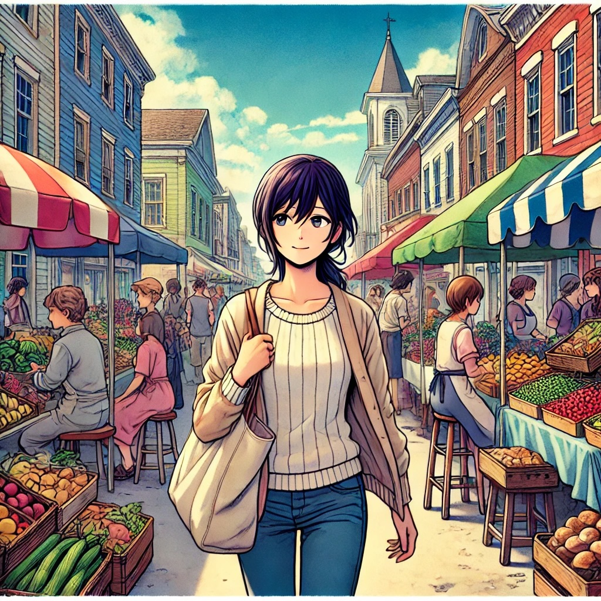
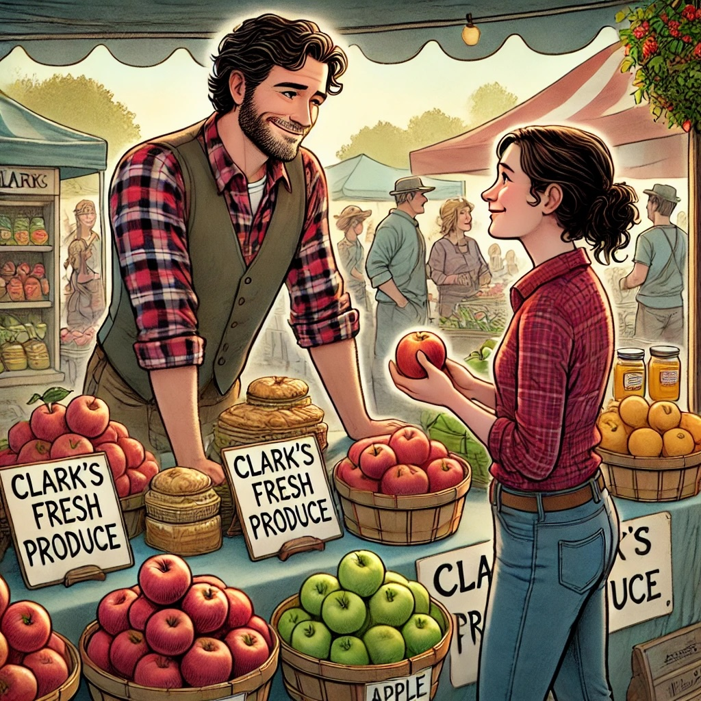

Eri's English Lesson: Reading and Listening
Target and Important Feature
Let's read and listen without translating.
Image 1: eri_marketplace.jpg
Story
Eri had recently moved from Sapporo to a small town in the Midwest of the United States. Excited to explore her new surroundings, she decided to visit the local farmer's market on Saturday morning.
As she walked through the market, she admired the fresh fruits, vegetables, and homemade goods displayed at various stalls. The aroma of baked bread and the sound of cheerful chatter filled the air.
Image 2: Eri Meets Clark at His Stall
"Good morning!" he greeted her with a warm smile. "What can I help you find today?"
"Hello," Eri replied softly. "I am looking for apples."
"You're in luck! We have some freshly picked apples right here," Clark said, pointing to a basket filled with red and green apples. "Would you like to try one?"
"Yes, please," Eri said. She took a bite of the apple Clark handed her. "It's very delicious!"
"I'm glad you like it," Clark chuckled. "How many would you like?"
"I will take six apples, please," Eri decided.
"Sure thing," Clark began placing the apples into a paper bag. "Do you need anything else?"
Eri thought for a moment. "Do you have any honey?"
"Absolutely! We have local honey right over here," Clark showed her a shelf with jars of golden honey. "It's great with tea or on toast."
"I'll take one jar, please," Eri smiled.
"Excellent choice," Clark said. "That will be twelve dollars in total."
Eri handed him the money. "Thank you for your help."
"You're very welcome! Enjoy your goodies, and have a great day," Clark waved as she walked away.
As Eri continued exploring the market, she felt happy and more confident. She looked forward to many more visits and new experiences in her new hometown.
Audio File
Listen to the story to practice your listening skills.
Word and Idiom List with Japanese Definitions
- Admire (verb): to look at something with enjoyment. 日本語訳: 賞賛する、感心する
- Aroma (noun): a pleasant smell. 日本語訳: 香り、芳香
- Stall (noun): a stand or booth where goods are sold. 日本語訳: 屋台、売店
- Friendly (adjective): kind and pleasant. 日本語訳: 親切な、友好的な
- Delicious (adjective): very tasty. 日本語訳: おいしい
- Confident (adjective): feeling sure about oneself. 日本語訳: 自信のある
- Cheerful (adjective): noticeably happy and optimistic. 日本語訳: 陽気な、快活な
- Goods (noun): merchandise or possessions. 日本語訳: 商品、品物
- Vendor (noun): a person or company offering something for sale. 日本語訳: 売り手、販売者
- Homemade (adjective): made at home rather than in a store or factory. 日本語訳: 自家製の